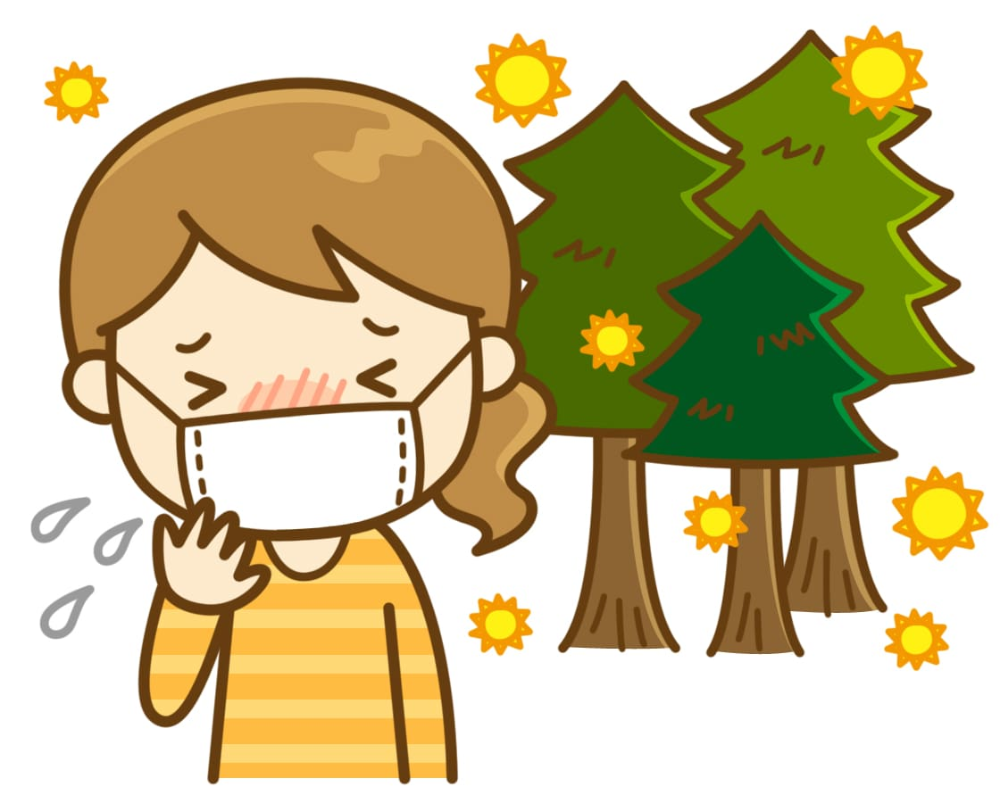
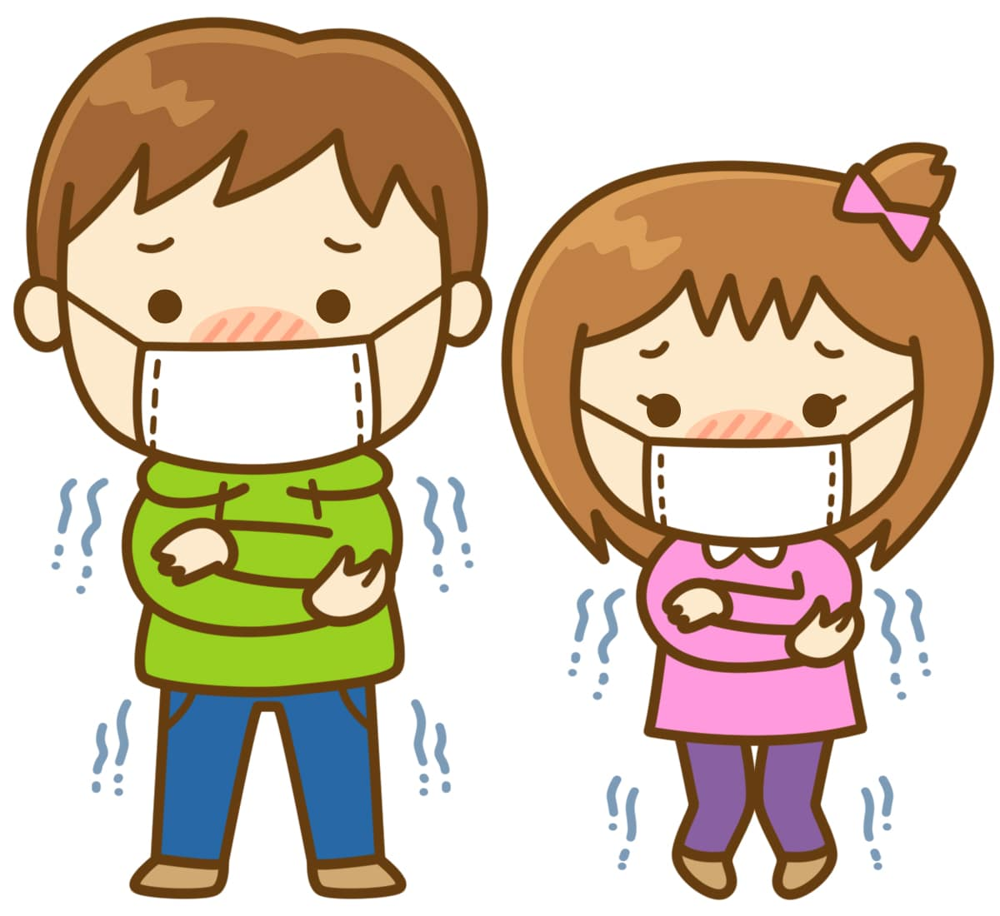
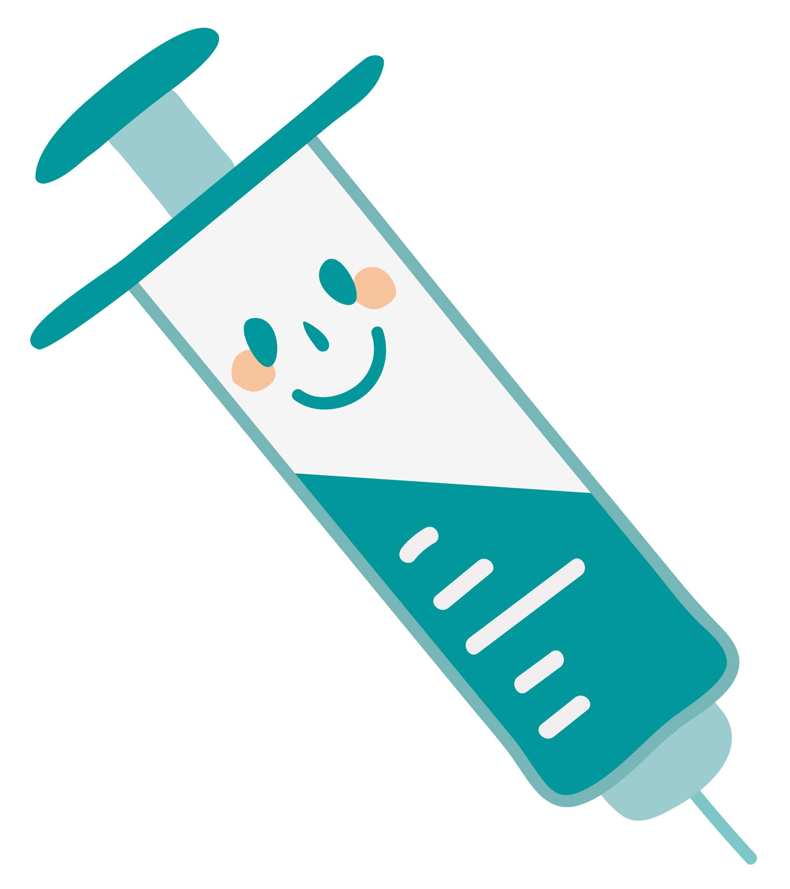

― 診療案内 ―
当クリニックでは以下の3タイプの診療を受けることができます。
花粉症

春だけでなく一年を通して空気中に舞う花粉。お客様によって花粉症対策になる季節や症状の重さは異なります。診療によって適切な薬の処方箋を提供することはもちろんのこと、血液検査によるアレルゲンとなっている花粉の特定や舌下免疫療法そしてレーザー治療など様々な治療方法をご用意しております。
風邪

ただの風邪だと思わずに少しでも不調を感じたらお越しください。風邪だと思ったら肺炎になってしまったり、本当はインフルエンザだったりと、侮れません。これまで処方したお薬や診療結果を記したカルテと問診により、その時に最も効果のある対応を心がけております。
予防接種

高熱や頭痛、関節痛、筋肉痛、のどの痛み、咳、鼻水などがインフルエンザの代表的な症状です。普通の風邪に比べて全身症状が強く表れます。とりわけ高齢の方や慢性疾患をお持ちの方にとっては、気管支炎や肺炎などを合併し重症化することがあるため注意が必要な病気の1つです。
インフルエンザの免疫ができるまでには、ワクチン摂取から2週間ほどかかり、効果は5ヶ月間ほど持続しますのでシーズン前の摂取がおすすめです。
※なお、インフルエンザの予防接種はインフルエンザに100%かからなくするためのものではなく、「かかりにくくしたり、万が一かかってしまったとしてもその症状を和らげるためのもの」です。